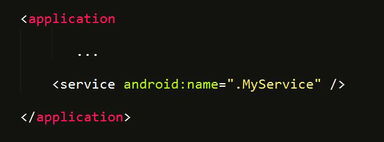

ANDROID DEVELOPMENT
Services
A service is a component of an app that runs in the background, doing some prolonged task, without iunteracting with the user. For example, the Music app plays the songs from an activity in the background.
A service can take 2 states:
1) Started - when an activity starts the service by calling startService()
2) Bound - when an activity binds the service to it by calling bindService(). This offers a client server system through which the activity and the service can communicate.
Remember, started and bound are not two different kinds of services. There is only one kind of service and a service can be started and then bound to an activity if needed.
Examples
Services not bound- Downloading a set of images from the Internet.
Services that are bound- Music player. Music will be played by the service. It will have to interact with the activity when the user presses pause or stop.
Command to start a service
Intent intent = new Intent(this, MyService.class);
startService(intent);
Command to stop a service?
Intent intent = new Intent(this, MyService.class);
stopService(intent);
Make sure you let the manifest know about the Service!
